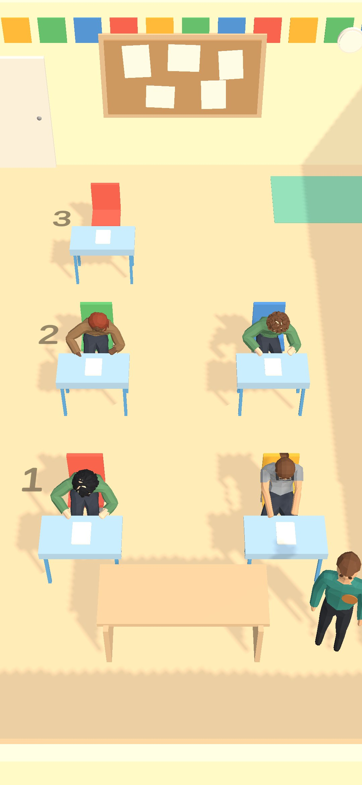
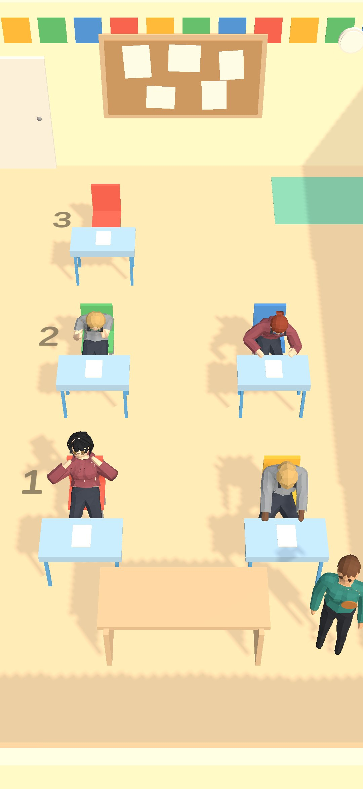

Wardrobe
The player's supervisor will get a wardrobe: hats, tops, trousers, shoes, badges and extras, each worn or taken off. Phase 1 gives the supervisor a real body. The stack of cubes is gone. The supervisor now uses the students' skinned body and skeleton, as a man or a woman (the player's choice, saved with the career). The supervisor walks with a real walk cycle, holds a hand out when acting on a student, wears the bought shirt colour, and wears the badge on the front of the chest. Later phases will extend this page: the wardrobe slots and the store's live preview (2), clothing art (3), and prices and unlocks (4).
In the room
Play mode on a phone (1080 × 2340) in two schools' rooms, with the Bronze badge on and the issued teal shirt. Standing beside the supervisor's desk when the room opens, and mid-walk a moment after a tap. When standing, the supervisor faces the camera, turned slightly toward the room's centre, so the face and the badge show.







The walk
20 frames a second of game time while the supervisor crosses the front of the room at full speed:
first the man, then the woman. The left clip uses the game's camera angle, closer in. The right clip shows the
supervisor side-on. The walk is the students' own walk clip from candidate.glb; no new clip was
made. Its speed follows the supervisor's actual speed, so the planted foot stays put on the floor. The blend
from standing to walking follows the speed too, so starting and stopping are gradual. A footstep sound plays
each time a foot lands.


Walk speed lowered from 3.2 to 2.1 m/s (brisk walk), the user's choice. 3.2 m/s is a jog: a walk would have to play at 2.3× its speed and would look like scurrying. At 2.1 m/s the clip plays at 1.5×. The clip's planted foot travels 1.40 m/s at normal speed, measured from the clip. The balance bots now walk at 2.1 m/s too. Their twelve careful test careers were re-recorded: median final coins went from 1017 to 1010, median reputation from 70 to 68.5, and none was dismissed.
The supervisor, close up
The same figure the room uses, built on its own: as issued (teal shirt, no badge), and with the Navy Shirt and the Bronze Badge. The badge is a small disc on the chest bone, over the wearer's left chest, placed against the front of each body's shirt. It moves with the chest. Before, it was a cube that floated behind the supervisor's back.


Students are unchanged
The students' body file, parts file and prefab are untouched. The supervisor uses them read-only and has its own material. In the Maple room the same class is seated before and after the change: the students are identical, and only the supervisor differs. In the National room the class draw depends on the frame count, so different people are seated, but they are drawn the same way. A test builds both supervisors and checks that every student renderer's colour and material is unchanged.


How it works
One builder
SupervisorFigure.Build(prefab, appearance, parent) makes a
dressed figure anywhere, from a SupervisorAppearance (body, hair, shirt, trousers, shoes, badge).
The room uses it now. The store's live preview will use it in phase 2.
Man or woman
Saved in the career as SupervisorBody, Male by default. Older
saves load as Male. It is only a look: the simulation never reads it. The phase 2 wardrobe adds the
toggle.
Three clips, one mixer
Standing, Walking and PresentDocument (the reach), from the students' file. They are mixed by speed on a hand-driven graph, with no per-frame allocation.
Mobile cost
One skinned body, two or three skinned parts, a badge disc and one material.
Known limits
- Start spot near the edge. On a phone in the Maple room, the start spot beside the desk (from M130.1) is close enough to the frame's right edge to clip the right arm at rest. The block figure was narrower and fit.
- Shirt seams. The female long-sleeved top shows a few thin seams, as it does on the female students. This is the shared art; phase 3 replaces it.
- Turning on the first step. The agent turns at 720°/s. On the first step from rest, the body walks a few frames slightly sideways before it faces its path.